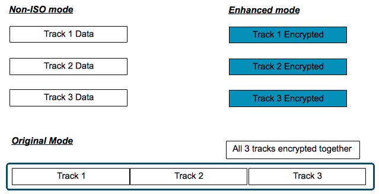

概述
磁条读取器 (MSR) 输入用于从“磁条”卡（如信用卡或借记卡）获取数据。当通过 MSR“刷卡”时，存储在黑色磁条上的信息将传输至设备。信息使用 ANSI x4.16 标准以开放格式编码，并且通常与运营商的身份和/或金融机构有关。DataWedge 可以从使用 ANSI x4.16 格式的大多数卡中获取并输出原始数据。对于同样符合 ISO 和美国银行家协会发布的 ISO/ABA 规格的卡，开发人员可以选择启用 Zebra 加密，以在获取数据时立即保护数据，并且在此后一直提供保护。在 Zebra 设备上启用此功能之后，无法禁用加密。
根据 ANSI 磁条标准，数据存储在卡上的三个磁道中。未加密的数据可从任何单个磁道或从所有三个磁道一次性获取。使用 Zebra“增强模式”加密的已加密数据也是如此。Zebra“原始模式”加密将所有三个磁道视为单个实体。
 MSR 卡编码的三种模式，其中两个包括加密
启用加密
在设备上启用加密无法撤消。一旦已配置设备用于加密 ISO/ABA 数据，则它再也不会配置为输出原始 ISO/ABA 数据；在“原始”和“增强”加密模式之间的切换是此类设备唯一允许的更改。加密仅适用于 ISO/ABA 数据；所有其他 MSR 获取的数据都是使用“非 ISO 模式”以未加密的形式进行输出。
要了解如何启用加密和使用加密数据，请参阅 ID TECH SecureHead 用户手册。
兼容 Zebra 设备
以下 Zebra 设备可使用 DataWedge 获取（并可选择加密）MSR 数据：
- 带 MSR 的 MC40（型号 MC40N0-SLK3RM1）
- 带 MSR 扣入式模块的 TC70/TC75（部件号 MSR-TC7X-SNP1-01）
查看所有 MC40 配置选项 (.pdf)。
MSR 输入
要启用 DataWedge 以接受 MSR 输入：
选中所需配置文件的 MSR 输入部分中的“已启用”框：
 在“DWDemo”配置文件中启用 MSR 输入
在“DWDemo”配置文件中启用 MSR 输入
注意：DataWedge 还提供了蜂鸣音和其他反馈以指示扫描结果。有关更多信息，请参阅扫描参数部分。
MSR 输出
DataWedge 仅通过 Intent 输出 MSR 数据。无论获取的数据是“开放”或“加密”均如此。因此，接收应用程序必须能够接受和处理 Intent 捆绑包中的数据。为了帮助简化应用程序开发人员对 MSR 数据的使用，DataWedge 自动解析获取的数据，设置它的格式以适合特定用途，并将修改过的数据放到特定标签中。例如，用于打印收据的代码可能会使用其中一个“掩蔽数据 (ASCII)”标签，该标签将显示信用卡号码的所有内容，但最后四位显示为星号。
对于修改获取的数据，DataWedge 只提供下面各部分中所示的格式选项。在 ID TECH SecureHead 用户手册中可以找到所显示选项之外的用于设置数据格式的选项。自定义数据格式是开发人员的单方面负责的责任。
要获取 MSR 数据：
Intent.getStringtExtra()
上面的方法调用将返回可从卡中读取的所有数据。下表列出了标签中包含的数据字段。
非 ISO 模式
非 ISO 模式是任何未启用加密的设备上的默认模式。此模式输出未加密的数据，与卡中读取的完全一样。其三个状态标签（在下面的映射表中）指示卡上每个相应磁道中的数据是否存在。
在启用加密的设备上，只有在读取不符合 ISO/ABA 标准的卡时才调用“非 ISO 模式”；在其他情况下此类卡中的数据使用“原始”或“增强”模式进行加密，否则将永远无法配置。
所有三个磁道中的 MSR 数据均包含在标签中： com.symbol.datawedge.msr_data
非 ISO 字段到标签映射
卡数据字段 |
映射到 DataWedge 标签 |
磁道 1 状态 | com.symbol.datawedge.msr_track1_status |
磁道 2 状态 | com.symbol.datawedge.msr_track2_status |
磁道 3 状态 | com.symbol.datawedge.msr_track3_status |
所有 MSR 数据（请参阅下面的字段表） | com.symbol.datawedge.msr_data |
非 ISO 字段
字段编号 |
说明 | 备注 |
1 | STX |
|
2 | 长度 |
|
3 | 卡编码类型 |
|
4 | 磁道 1-3 状态 |
|
5 | 磁道 1 未加密的长度 | 0 =“无磁道 1 数据存在” |
6 | 磁道 2 未加密的长度 | （始终存在） |
7 | 磁道 3 未加密的长度 | 0 =“无磁道 3 数据存在” |
8 | 磁道 1 数据 | （如果存在） |
9 | 磁道 2 数据 | （始终存在） |
10 | 磁道 3 数据 | （如果存在） |
11 | LRC |
|
12 | 校验和 |
|
13 | ETX |
|
|
增强模式
Zebra 增强模式分别对每个磁道上的数据进行加密；如果需要，可以单独处理每个磁道上的数据。下面显示了获取数据的标签。
所有三个磁道中的 MSR 数据均包含在标签中： com.symbol.datawedge.msr_data
上面的标签返回卡中可读取的所有数据。下表列出了标签中包含的数据字段。
增强模式字段到标签映射
卡数据字段 | 映射到 DataWedge 标签 |
磁道 1 状态 | com.symbol.datawedge.msr_track1_status |
磁道 2 状态 | com.symbol.datawedge.msr_track2_status |
磁道 3 状态 | com.symbol.datawedge.msr_track3_status |
磁道 1 加密的数据存在 | com.symbol.datawedge.msr_track1_encrypted_status |
磁道 2 加密的数据存在 | com.symbol.datawedge.msr_track2_encrypted_status |
磁道 3 加密的数据存在 | com.symbol.datawedge.msr_track3_encrypted_status |
磁道 1 掩蔽数据 (ASCII) | com.symbol.datawedge.msr_track1 |
磁道 2 掩蔽数据 (ASCII) | com.symbol.datawedge.msr_track2 |
磁道 3 掩蔽数据 (ASCII) | com.symbol.datawedge.msr_track3 |
所有 MSR 数据（有关详细信息，请参阅字段表） | com.symbol.datawedge.msr_data |
磁道 1 加密数据（十六进制） | com.symbol.datawedge.msr_track1_encrypted |
磁道 2 加密数据（十六进制） | com.symbol.datawedge.msr_track2_encrypted |
磁道 3 加密数据（十六进制） | com.symbol.datawedge.msr_track3_encrypted |
磁道 1 进行哈希处理 | com.symbol.datawedge.msr_track1_hashed |
磁道 2 进行哈希处理 | com.symbol.datawedge.msr_track2_hashed |
磁道 3 进行哈希处理 | com.symbol.datawedge.msr_track3_hashed |
DUKPT 序列号 (KSN) | com.symbol.datawedge.msr_ksn |
增强模式字段
字段编号 | 说明 | 备注 |
1 | STX |
|
2 | 长度 |
|
3 | 卡编码类型 |
|
4 | 磁道 1-3 状态 |
|
5 | 磁道 1 未加密的长度 | 0 =“无磁道 1 数据存在” |
6 | 磁道 2 未加密的长度 | （始终存在） |
7 | 磁道 3 未加密的长度 | 0 =“无磁道 3 数据存在” |
8 | 未加密/掩蔽数据发送状态 |
|
9 | 加密/哈希数据已发送状态 |
|
10 | 磁道 1 已掩蔽 | （如果存在） |
11 | 磁道 2 已掩蔽 | （始终存在） |
12 | 磁道 3 已掩蔽 | （如果存在） |
13 | 磁道 1 已加密 | （如果存在） |
14 | 磁道 2 已加密 | （始终存在） |
15 | 磁道 3 已加密 | （如果存在） |
16 | 磁道 1 进行哈希处理 | （如果存在） |
17 | 磁道 2 进行哈希处理 | （始终存在） |
18 | 磁道 3 进行哈希处理 | （如果存在） |
19 | KSN（DUKPT 序列号） |
|
20 | LRC |
|
21 | 校验和 |
|
22 | ETX |
|
原始模式
Zebra 原始模式将三个磁道上的数据加密为单个实体，防止磁道数据单独处理，除非下面描述中的标签包含 Zebra 根据最常见使用案例为便利创建的这些标签。将卡上所有三个磁道的可读取数据放置在标签 com.symbol.datawedge.msr_data 中，并且可以根据开发人员的需要进行解析。
下表列出了标签中包含的数据字段。
原始模式字段到标签映射
卡数据字段 | 映射到 DataWedge 标签 |
磁道 1 状态 | com.symbol.datawedge.msr_track1_status |
磁道 2 状态 | com.symbol.datawedge.msr_track2_status |
磁道 3 状态 | com.symbol.datawedge.msr_track3_status |
磁道 1 掩蔽数据 (ASCII) | com.symbol.datawedge.msr_track1 |
磁道 2 掩蔽数据 (ASCII) | com.symbol.datawedge.msr_track2 |
磁道 3 掩蔽数据 (ASCII) | com.symbol.datawedge.msr_track3 |
所有 MSR 数据（有关详细信息，请参阅字段表） | com.symbol.datawedge.msr_data |
磁道 1 加密数据（十六进制） | com.symbol.datawedge.msr_track1_encrypted |
磁道 2 加密数据（十六进制） | com.symbol.datawedge.msr_track2_encrypted |
磁道 3 加密数据（十六进制） | com.symbol.datawedge.msr_track3_encrypted |
磁道 1 进行哈希处理 | com.symbol.datawedge.msr_track1_hashed |
磁道 2 进行哈希处理 | com.symbol.datawedge.msr_track2_hashed |
磁道 3 进行哈希处理 | com.symbol.datawedge.msr_track3_hashed |
DUKPT 序列号 (KSN) | com.symbol.datawedge.msr_ksn |
原始模式字段
字段编号 | 说明 | 备注 |
1 | STX |
|
2 | 长度 |
|
3 | 卡编码类型 |
|
4 | 磁道 1-3 状态 |
|
5 | 磁道 1 未加密的长度 | 0 =“无磁道 1 数据存在” |
6 | 磁道 2 未加密的长度 | （始终存在） |
7 | 磁道 3 未加密的长度 | 0 =“无磁道 3 数据存在” |
8 | 磁道 1 已掩蔽 | （如果存在） |
9 | 磁道 2 已掩蔽 | （始终存在） |
10 | 磁道 3 数据 | （如果存在） |
11 | 加密数据 | 仅当磁道 1 和磁道 3 存在时才包括 |
12 | 磁道 1 进行哈希处理 | （如果存在） |
13 | 磁道 2 进行哈希处理 | （始终存在） |
14 | KSN（DUKPT 序列号） |
|
15 | LRC |
|
16 | 校验和 |
|
17 | ETX |
|
|
相关指南：
- DataWedge 配置文件 - 所有 DataWedge 输入、处理和输出选项指南
- DataWedge API - 所有 DataWedge 支持的 Intent 使用规范
- ID TECH SecureHead 用户手册 - ID TECH 的技术规范读取在 Zebra MSR 设备中使用的标题
- ANSI x9.24-2016 - 加密密钥 (DUKPT) 规格